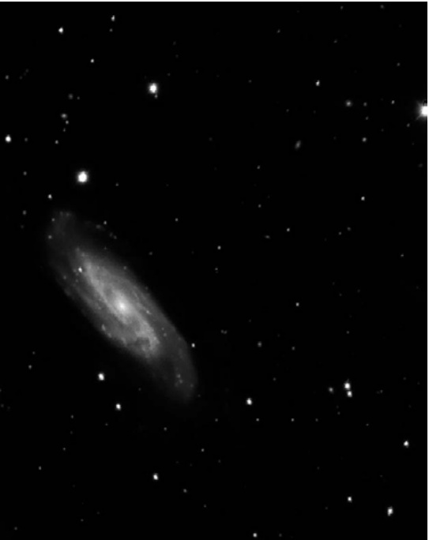

NGC 3198 · NGC 3198星系

在大熊座左后足的星域中，隐藏着一座宇宙级的"暗物质实验室"——NGC 3198。这个拥有优雅旋臂的河外星系，不仅是威廉·赫歇尔1788年的发现杰作，更是现代天文学测量暗物质分布的标杆天体。
基本参数 | Basic Parameters
| 参数 / Parameter | 数值 / Value |
|---|---|
| 类型 / Type | 旋涡星系 (S(rs)c) / Spiral Galaxy (S(rs)c) |
| 星座 / Constellation | 大熊座 / Ursa Major |
| 赤经 / Right Ascension | 10h 19.9m |
| 赤纬 / Declination | +45° 33′ |
| 视星等 / Magnitude | 10.3 |
| 表面亮度 / Surface Brightness | 13.9 |
| 视直径 / Angular Size | 9.2′ × 3.5′ |
| 距离 / Distance | 约4700万光年 / ~47 million light-years |
| 发现者 / Discoverer | 威廉·赫歇尔, 1788年 / William Herschel, 1788 |
| 真正大小 / True Size | 约40,000光年 / ~40,000 light-years |
| 总质量 / Total Mass | 600亿倍太阳质量 / 60 billion solar masses |
历史的回响 | Echoes from History
William Herschel first captured this celestial jewel on January 14, 1788, describing it as "considerably bright, much extended south-preceding north-following, very gradually brighter in the middle, 5' length or 3' wide."
赫歇尔：[1788年1月14日观测] 亮度相当显著，南北方向延伸显著（南前北后），中部亮度渐变增强，长度约5′，宽度约3′。
His simple observation with a reflecting telescope of just 20 inches aperture captured the essence of this galaxy—a bright, elongated glow with a gradually brightening core. Nearly two centuries later, Lord Rosse would include NGC 3198 among his 14 "spiral or curvilinear nebulae" discovered prior to 1850, cementing its place in the annals of extragalactic astronomy.
NGC描述：相当明亮，非常庞大，朝方位角45°方向显著延伸，中心区域亮度呈极缓梯度递增。
螺旋之美 | The Beauty of Spiral Structure
NGC 3198 is a somewhat "soft" and extended spiral galaxy about 2° north-northeast of third-magnitude Lambda Ursae Majoris (Tania Borealis) in the Great Bear's left-hind foot, close to the northern border of Leo Minor. In fact, the galaxy belongs to the Leo Spur of galaxies.
NGC 3198是一个稍显"柔和"且延展的旋涡星系，位于大熊座左后足处三等星天樽（Lambda Ursae Majoris，又称天玑北）东北偏北约2度，靠近小狮座北部边界。事实上，该星系属于狮子座星系支链。
In early plates, it was classified as a barred spiral galaxy, and many sources to this day refer to it as such. The early images revealed a small, very bright nucleus in what appeared to be a bar, partially obscured on one side. The galaxy also displayed what appears to be a pseudo-ring in the intermediate part of the galaxy's disk, and several knotty, partially resolved branching arms with numerous HII regions.
在早期底片中，它被归类为棒旋星系，至今许多资料仍沿用此称。该星系的早期图像显示出一个明亮的小型核球，位于看似棒状结构的区域，其一侧部分被遮蔽。星系盘中间部分还呈现出伪环状结构，以及数条结节状、部分解析的分支旋臂，内含大量HII区。
However, in a 1991 study published in Astronomy & Astrophysics, R. L. M. Corradi and colleagues from the University of Padua, Italy, found that modern CCD images failed to reveal the presence of a bar. "Despite the RC2 classification," they noted, "there is no strong evidence that NGC 3198 is a barred spiral."
在1991年的《天文学与天体物理学》中，意大利帕多瓦大学的R. L. M. Corradi及其同事指出，现代CCD图像并未显示该星系存在棒状结构。"尽管RC2分类如此，"他们表示，"但并无有力证据表明NGC 3198是棒旋星系。"
The arms in NGC 3198 appear moderately thin and fairly well defined. However, the inclination angle of this 125,000 light-year-long system is so high (only 19° from edge-on) that the spiral pattern is not easily traced from our viewing perspective.
NGC 3198的旋臂显得较为纤细且轮廓分明。然而这个长达12.5万光年的星系系统倾角过高（与侧向视角仅差19度），导致其旋涡结构难以清晰追踪。
暗物质的争议战场 | A Battlefield in the Dark Matter Debate
Given a more perfect viewing angle, we would probably see NGC 3198 as a two-armed spiral with a secondary third arm. The two principal S-type arms would start at the center, then wind around for about half a revolution before each arm branched to form the multiple pattern we see in the outer regions.
若观测角度更为理想，我们或许能将NGC 3198视为一个拥有次级第三旋臂的双旋臂螺旋星系。两条主要的S型旋臂从星系中心起始，缠绕约半周后各自分叉，形成我们在外围区域所见的复合结构。
Bruce Rout, in a 2010 private communication, explained that through geometric projection on each pixel in the image, the galaxy can be seen as if looking at it from directly above. "In this case we can see the galaxy as being a perfect Archimedean Spiral," he shared.
布鲁斯·劳特在2010年的私人通信中指出，通过对图像中每个像素进行几何投影，该星系可被视作从正上方俯瞰的效果。"此时我们能观测到该星系呈现完美的阿基米德螺线形态，"他解释道。
Here lies one of the most fascinating aspects of NGC 3198: its role in the dark matter debate. The galaxy's stars all orbit with a constant rotational velocity of 151 km/s—a "flat rotation curve" that has been traditionally cited as evidence for dark matter halos surrounding spiral galaxies.
这里便涉及NGC 3198最引人入胜的科学意义——它在暗物质争论中的关键角色。该星系的恒星均以151 km/s的恒定转速旋转——这种"平坦旋转曲线"传统上被视为螺旋星系周围存在暗物质晕的证据。
However, Rout offers a provocative counter-argument: "From overwhelming evidence in the observations of our own galaxy, there is no requirement for exotic material [such as dark matter] in the linear mass distribution... Any material, exotic or otherwise, having a geometry other than that given by a linear mass distribution would invalidate a constant rotational velocity profile. We therefore conclude there is no 'dark matter' in NGC 3198."
然而劳特提出了一个富有挑战性的反驳："基于对本银河系观测的压倒性证据，线性质量分布无需引入暗物质等奇异物质...任何偏离线性质量分布几何形态的物质——无论是否奇异——都将破坏星系物质恒定转速分布特征。因此我们认定NGC 3198不存在所谓'暗物质'。"
This interpretation remains controversial, but NGC 3198 continues to serve as a testbed for competing theories about the nature of galactic dynamics.
哈勃的精密丈量 | Hubble's Precise Measurement
In the Hubble Space Telescope's key project, the Cepheid distance of NGC 3198 was determined to be 47 million light-years—a remarkably precise measurement. The team identified 78 Cepheid candidates in the period range from 8 to more than 50 days, of which 52 were selected for establishing the galaxy's distance.
在哈勃太空望远镜的关键项目中，NGC 3198的造父变星距离被确定为4700万光年。研究团队在8至50多天的周期范围内识别出78颗候选造父变星，其中52颗被选定用于测定该星系的距离。
At that accepted distance,
🔒 受限于篇幅，本文仅展示部分样章。O'Meara 先生完整的观测手记、实测数据及未公开的独家配图，请参阅原著双语典藏版。
👉 立即在闲鱼获取《DEEP-SKY COMPANIONS》中英双语高清典藏版